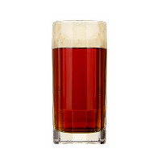
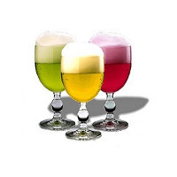
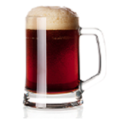

Lagers Cold Fermented Gems
Crisp, Clean, Clear
Tap List

Altbier
A very clean and relatively bitter beer, balanced by some malt character. Generally darker, sometimes more caramelly, and usually sweeter and less bitter than Düsseldorf Altbier

Beliner Weisse
A very pale, sour, refreshing, low-alcohol wheat ale

Bock
A relatively pale, strong, malty lager beer. Designed to walk a fine line between blandness and too much color. Hop character is generally more apparent than in other bocks